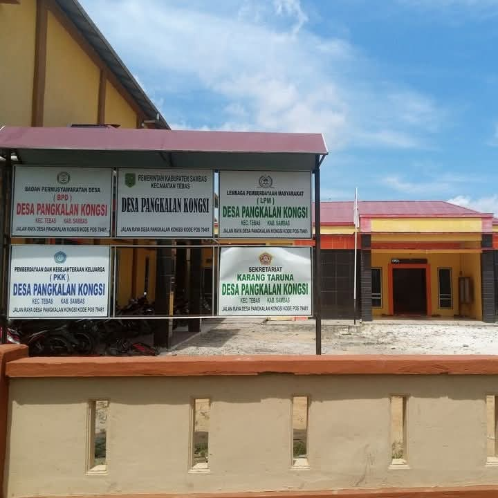

Profil Desa

Desa Pangkalan Kongsi merupakan salah satu desa yang memiliki kehidupan masyarakat yang beragam serta potensi yang dapat dikembangkan untuk meningkatkan kesejahteraan masyarakat.
Website ini menjadi sarana informasi dan dokumentasi mengenai berbagai kegiatan serta perkembangan Desa Pangkalan Kongsi.
Mewujudkan Desa Pangkalan Kongsi yang maju, mandiri, sejahtera, dan berdaya saing dengan mengutamakan kepentingan masyarakat.
1. Meningkatkan pelayanan kepada masyarakat.
2. Meningkatkan pembangunan desa.
3. Mengembangkan potensi ekonomi masyarakat.
4. Meningkatkan kualitas sumber daya manusia.
5. Menciptakan lingkungan desa yang aman dan nyaman.